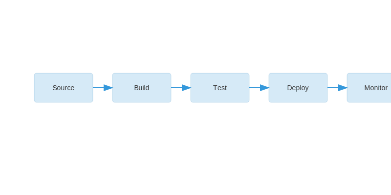

Continuous Integration (CI) and Continuous Delivery/Deployment (CD) are software development
practices that enable teams to deliver code changes more frequently and reliably. CI/CD
automates the building, testing, and deployment of applications.
CI/CD Pipeline Architecture

Key Components:
- Continuous Integration: Automated code integration and testing
- Continuous Delivery: Automated release process up to production
- Continuous Deployment: Automated deployment to production
- Pipeline: Automated workflow of CI/CD processes
- Quality Gates: Automated quality checks and approvals
- Artifacts: Build outputs and deployable packages